Peta Integrasi
Semua moda dalam satu peta, edisi terbaru (v26.08c). Klik utk memperbesar.
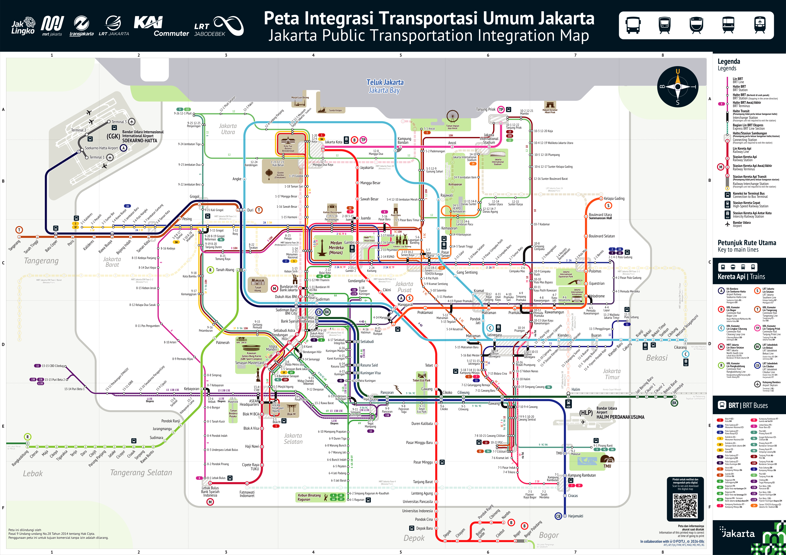
KRL Commuter Line
Peta resmi KAI Commuter (kci.id), Jabodetabek & Merak. Stasiun Karet digarisabai = dinonaktifkan.
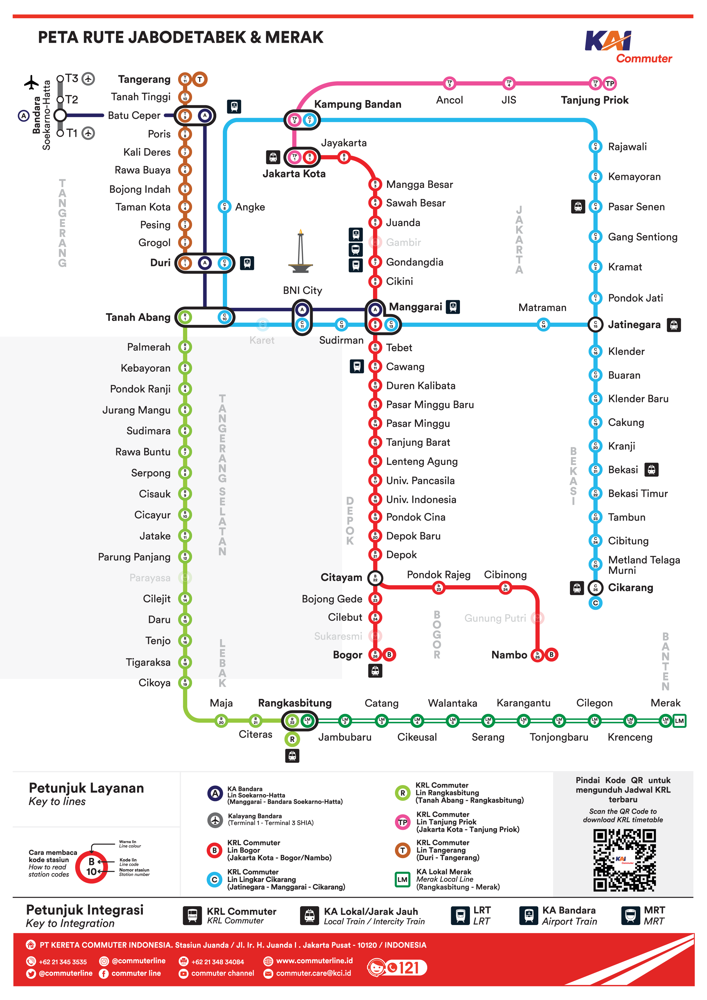
TransJakarta
Peta integrasi resmi TransJakarta + 14 koridor di bawahnya (peta per koridor terbaru, 2025-2026).
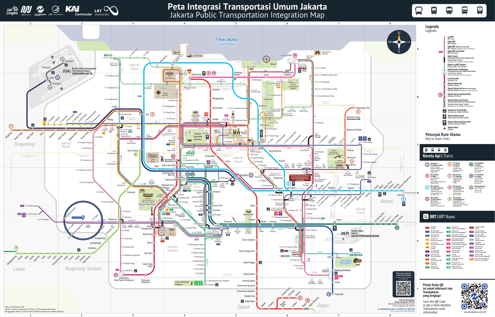
Koridor — peta rute resmi per koridor
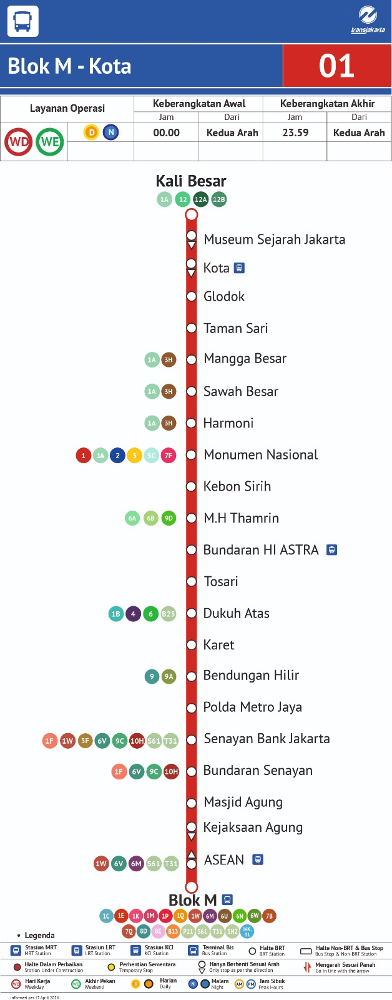
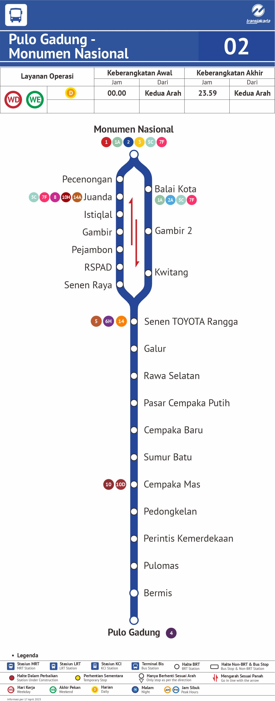
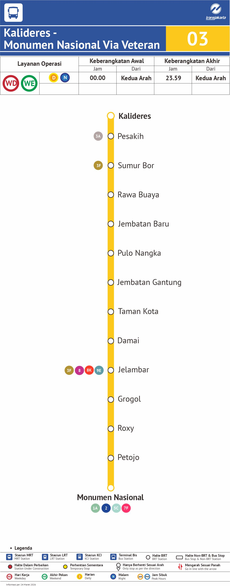
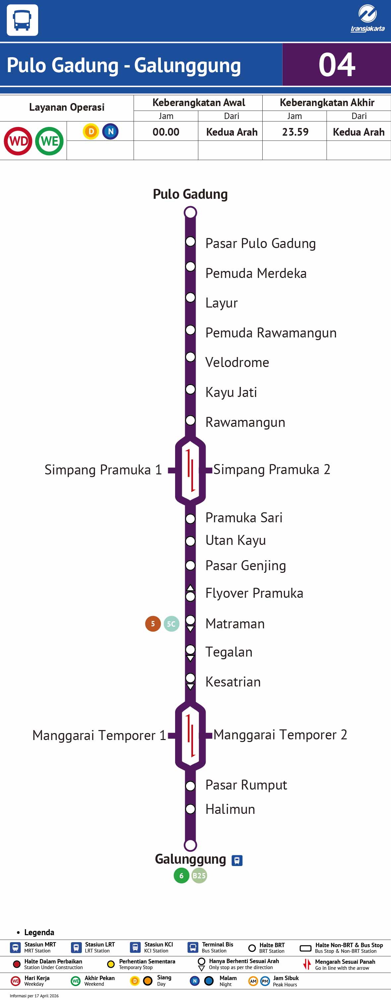
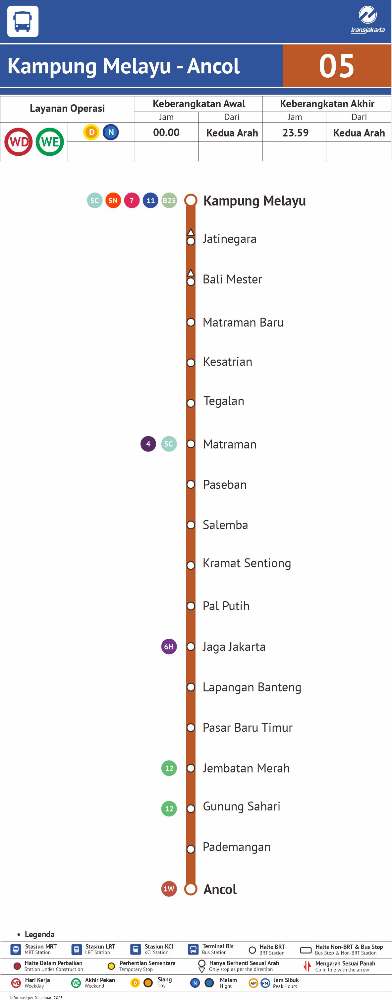
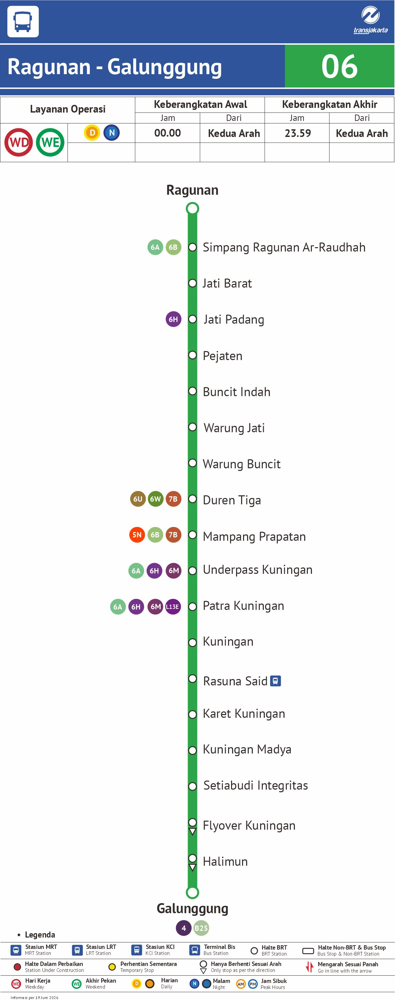
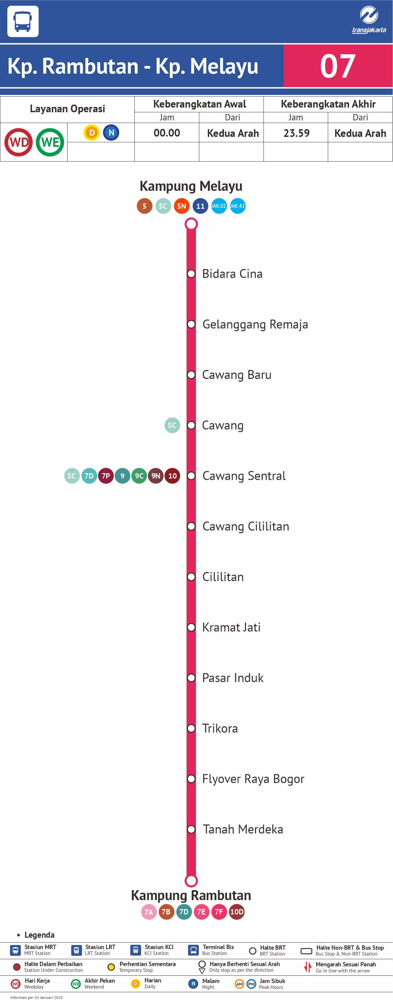
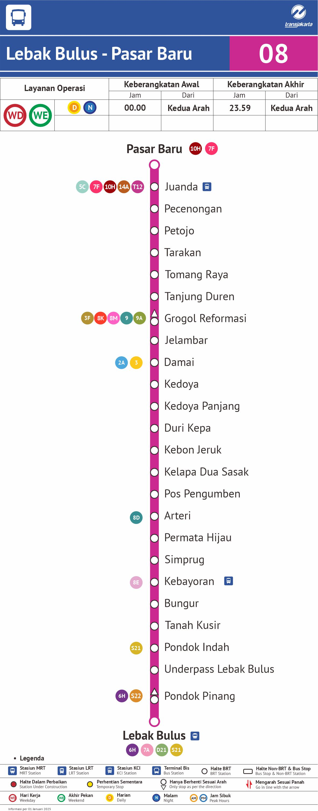
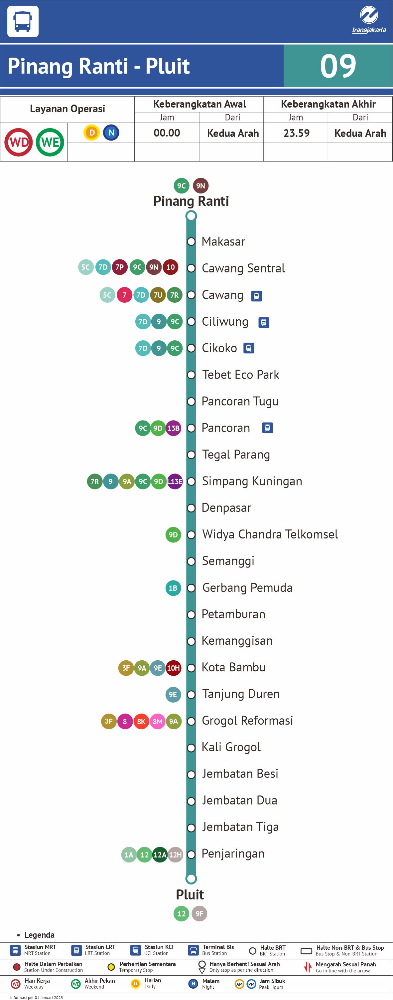
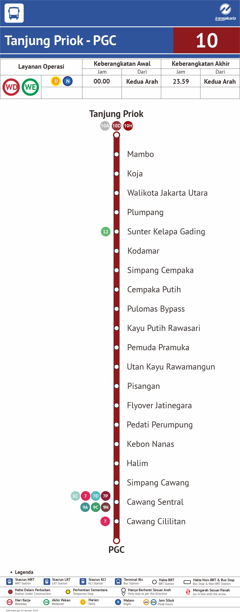
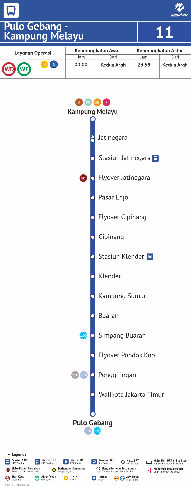
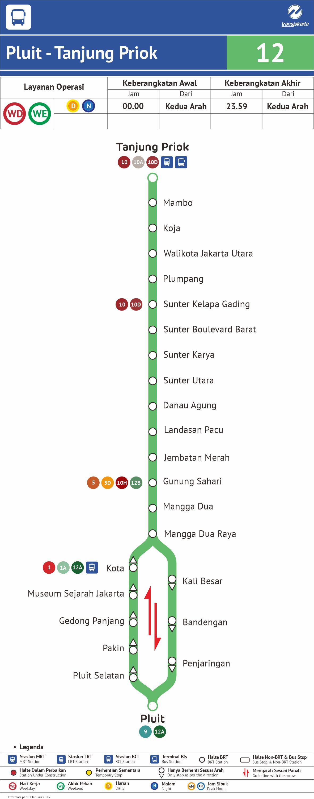
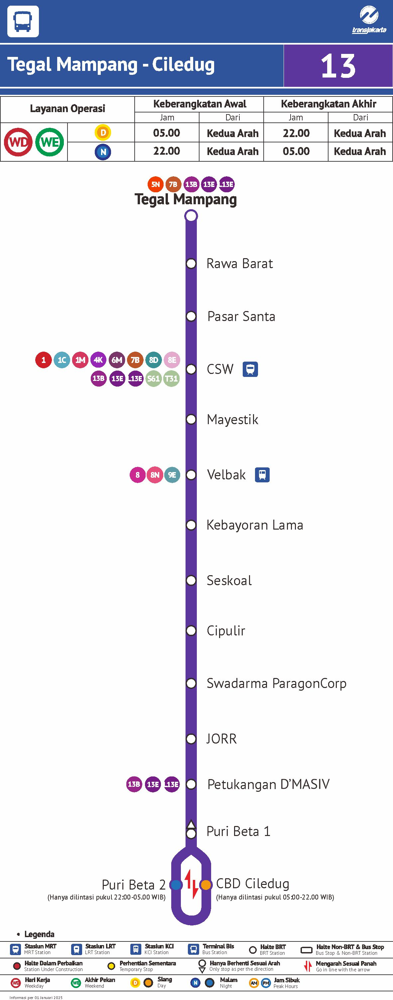
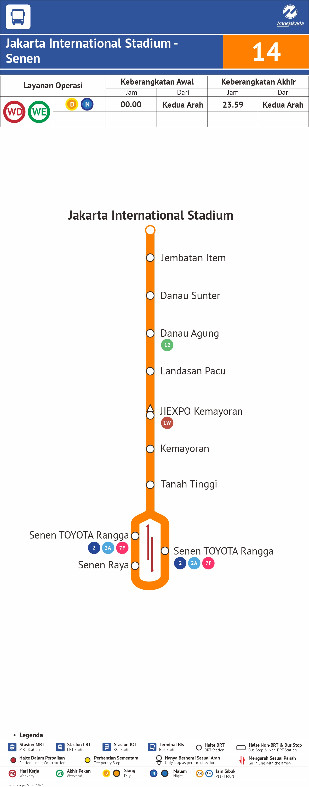
MRT Jakarta
Lin Utara-Selatan, 13 stasiun (Lebak Bulus - Bundaran HI), edisi Jan 2026.
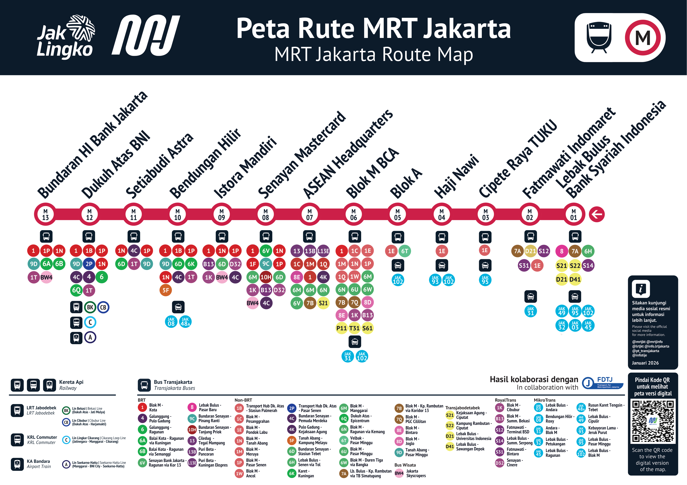
LRT Jakarta
PERHATIAN: edisi Nov 2024 — hanya fase 1A (6 stasiun, s.d. Velodrome). Ekstensi fase 1B (Velodrome-Manggarai, +5 stasiun, total 11) diuji coba 10 Sep 2026 dan diresmikan Presiden 16 Sep 2026 — lihat Peta Integrasi untuk jaringan terkini.
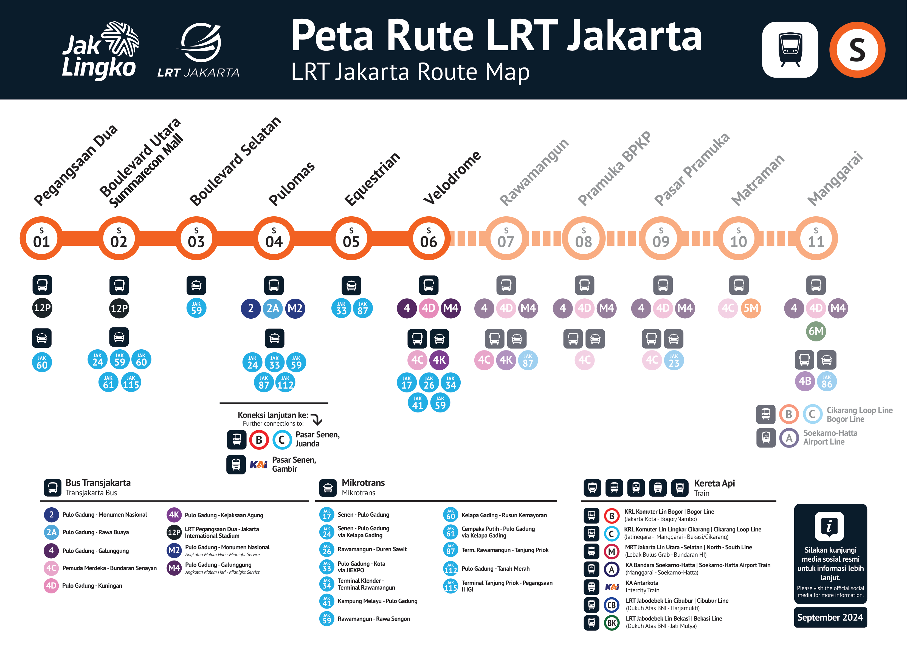
LRT Jabodebek
Lin Cibubur (Dukuh Atas BNI - Harjamukti) & Lin Bekasi (Dukuh Atas BNI - Jatimulya), 18 stasiun. Tidak ada perubahan lin sejak 2023.
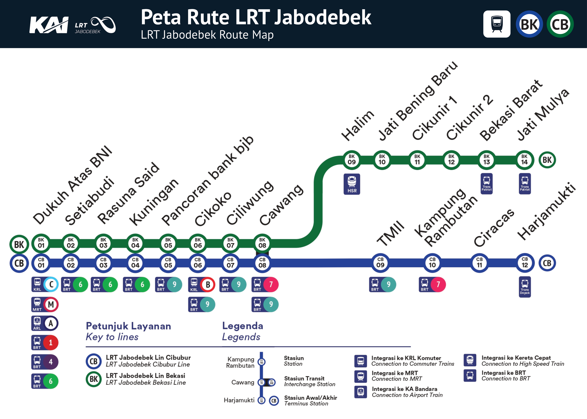